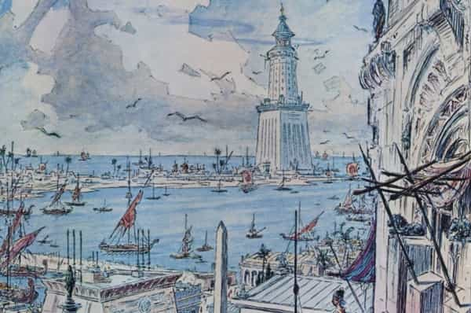
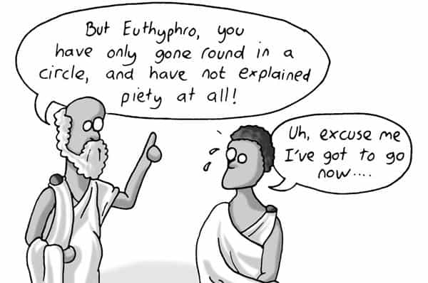

André is a young European who left his decaying country in 2012 for greener pastures. He enjoys exploring subterranean places, reading about a host of interconnected topics, and yearns for Tradition.


The state of Greece twenty-five centuries ago has surprising contemporary overtones. The Hellenic peninsular was a very loose confederation of city-states, many constantly at war with each other. Greeks only managed to unite when threatened by aliens: first when the prince of Troy, in Asia Minor, abducted one of their princesses of most royal blood, second when the Persian Empire fancied to rule them. Twice the Persian invasion was crushed (the Thermopylae battle masterfully depicted in 300 happened during the second time).
When war ceased, Greeks were already used to union and managed to bicker much less. Trade soared. Sparta declined. Athens, its long-time rival, attracted crafters, merchants, intellectuals, to the point of becoming a cosmopolitan center.

However, the prosperity had worms in its fruits. With the spirit of military camaraderie and phalanxes being no longer necessary, individualism rose. Along with the goods came money lending and scamming. The most noticeable change was a rise of rhetoric and dialectical discussions. Skilled aliens, having no political rights in Athens, coached young aristocrats who wished to rise above their peers. They taught them to speak well, to capture the people’s passions, to use framing and reasoning so that they would steer anyone to any conclusion. These masters of rhetoric were called sophists.
Under their influence, Athens became more “vibrant”: too many words diminished the value of words, too many individual ambitions raised mistrust, too many contradictory ideas fostered chaos. Social relationships became disingenuous, and some, after they got a taste of the gleaming, cool “philosophy”, became cynical:
For I fancy you have not failed to observe that lads, when they first get a taste of disputation, misuse it as a form of sport, always employing it contentiously, and, imitating confuters, they themselves confute others. They delight like spies in pulling about and tearing with words all who approach them…. And when they have themselves confuted many and been confuted by many, they quickly fall into a violent distrust of all that they formerly held true; and the outcome is that they themselves and the whole business of philosophy are discredited with other men. (Republic 539b-c)
Many Athenians grew tired, not only of the sophists’ tireless babble on any topic, but of their influence over the young. One Athenian, Socrates, decided to beat the sophists on their own ground. He trained himself in asking contrived questions, outframing and reframing anyone. When he descended into the arena, he managed to outsmart at least some of the rhetoricians by turning their own arguments upside down. All Plato’s dialogues bear this mark: Socrates always knows where he wants to go, yet he never tells, and leads his discussion partners there through contrived questions.

But Socrates turned dangerous as well. The philosophical chaos in his environment had already turned him into an acid skeptic. Plato’s earliest dialogues such as the Euthyphro and Laches tell about the impossibility to, respectively, have a satisfying idea of piety and bravery—which are fundamentally related to spiritual and civic consciousness—while the later Euthydemus is fully dedicated to pure, empty dialectical games a Saul Alinsky would not disown.
Socrates’ solution was too strong and destructive. Not only did he reject the sophists’ houses of cards but the foundations of his own city as well. Being really Socratic meant going full circle, rejecting almost any certainty, and disengaging from politics, which means withdrawing from the very basis of civic brotherhood, common sense, and shared culture.
When Socrates was rightly trialed, his judges would have liked to simply exile him or sentence him into closing his damned mouth. He would not give them the choice: either they should praise him as a hero or condemn him to death. Unsurprisingly, he was ordered to drink the hemlock.
When Socrates finally passed away, his young disciple Plato mourned him with utter sadness. The latter, though, used dialectics and rhetoric quite differently. When the true Socrates’ influence waned, the fictional Socrates we meet within the later dialogues stands out as an efficient mouthpiece who promotes brotherhood among legitimate citizens, a functional caste society, a vivid spirituality spanning from the simplest myths to the most complicated esoteric.
Plato constantly bashed and ridiculed the alien rhetoricians, perhaps more efficiently than his master did. But where Socrates led to nothingness Plato pushed for the re-forging of a true aristocracy. His Republic and Laws muse a lot on that. Those who have a knack to the occult will notice references to music, mathematics, geometry, and symbolic myths, mostly related to the Pythagorean tradition though not only—in the Timaeus (22b) a mysterious Egyptian priest tells out of nowhere, “the Greek are always children!”
Thus Plato and his close friends, whom we meet at the side of the fictional Socrates in the dialogues, succeeded where the real old Socrates failed: they drove sophistry out of the city and dried up the disorderly desires it fed on. You may find that Plato went a bit far, for example when he advised censoring or expelling the artists, but when you notice how much fashion, art, and marketing took a firm grip on people’s minds and judgments it becomes evident that his reasons are still ours.
Poets and story-tellers are guilty of making the gravest misstatements when they tell us that wicked men are often happy, and the good miserable; and that injustice is profitable when undetected, but that justice is a man’s own loss and another’s gain—these things we shall forbid them to utter, and command them to sing and say the opposite. (Republic 392a-b)
Plato’s ideal city was never realized. Utopias are more like guiding stars than mandatory plans. It still led the Athenians and other Greeks back to their true compass. One of these Greeks, who hailed from the northern city of Stagira, spent years studying under Plato before becoming a classic on his own right. His name was Aristotle, and although the sheer volume of his writings is enough to create awe, he was not a pompous sputter but a true thinker who understood the value of the world we live in.
Aristotle collected many things, from corpses of animals to political constitutions, and he drew insightful comparisons from them. Needless to say, he needed several travelling assistants to pick up such data, and he could afford these because he tutored the older prince from a kingdom on the North, Macedonia. This average-sized boy was made king under the name of Alexander III. Eventually he would become a fierce warrior, unite Greece by his military strength and skill, and make up his own empire.
If you had lived in Athens just before Socrates made himself a name on the agora, you would never have guessed what was to happen later. Greeks were divided, individualistic, well under the sway of marketers before the word was coined. And yet some of them, using the marketers’ very weapons, would expose them and have them chased away. Less than 50 years later, the Greeks were alive, well, full of masculine energy and travelling back to the Aryan fountain of youth in India at the side of Alexander the Great. If Plato and Aristotle came back today, they would undoubtedly side with the red pill.
Read Next: As Western Democracy Descends Into Tyranny, Plato’s Republic Becomes More Relevant Than Ever